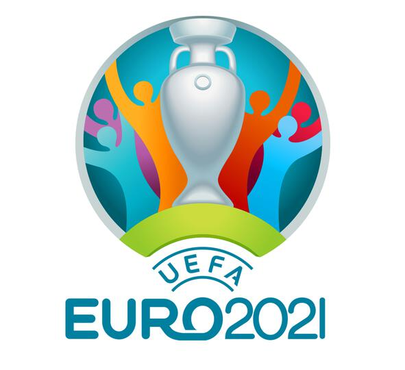
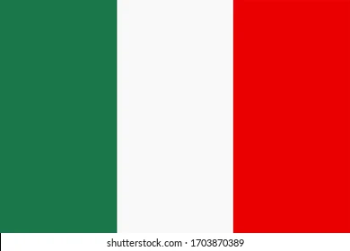
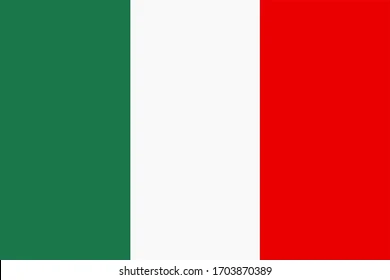
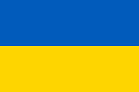
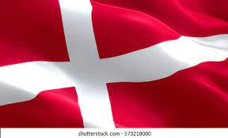
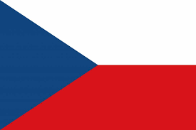
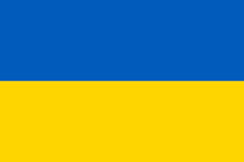
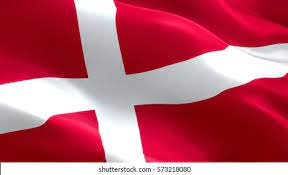
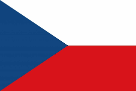

The European Football championship
UEFA official website The UEFA European Football Championship, less formally, the European Championship (EC) and informally as the Euros, is the primary association football competition contested by the senior men's national teams of the members of the Union of European Football Associations (UEFA), determining the continental champion of Europe. The competition has been held every four years since 1960, except for 2020, when it was postponed until 2021 due to the COVID-19 pandemic in Europe. Scheduled to be in the even-numbered year between FIFA World Cup tournaments, it was originally called the European Nations' Cup, changing to the current name in 1968. The individual events are branded in the form of "UEFA Euro [year]". Before entering the tournament, all teams other than the host nations (which qualify automatically) compete in a qualifying process. Until 2016 the championship winners could compete in the following FIFA Confederations Cup, but were not obliged to do so. The fifteen European Championship tournaments have been won by ten national teams: Germany and Spain have each won three titles, France has won two titles, and the Soviet Union, Italy, Czechoslovakia, the Netherlands, Denmark, Greece and Portugal have won one title each. To date, Spain is the only team in history to have won consecutive titles, doing so in 2008 and 2012. It is the second-most watched football tournament in the world after the FIFA World Cup. The Euro 2012 final was watched by a global audience of around 300 million. The most recent championship, hosted by France in 2016, was won by Portugal, who beat France 1–0 in the final at the Stade de France in Saint-Denis after extra time. The match averaged 284 million viewers, making it the second-most watched game in European tournament history
 

 




